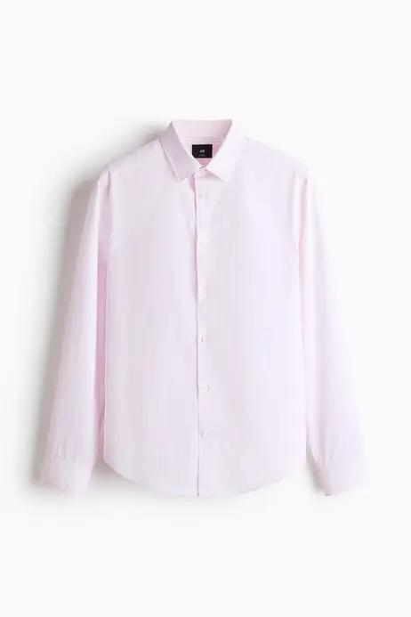
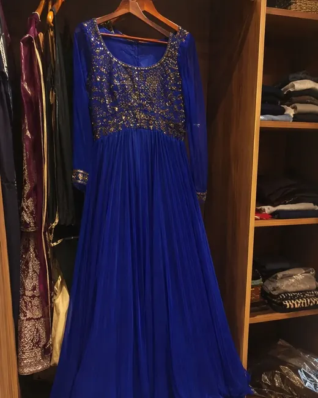

Worn 11× · $2.55/wear

Worn 0× · resting
61 of 61 on the record
Closet — at rest. The count hangs off the title on a thread; under it the wardrobe stands with its doors parted on a rail of ten hangers. Search and the FILTERS chip share one row; KIND and STATE are a single sideways rail, sectioned by a tick and sticky under the header. Cards are corner-bracketed plates: photograph, serif name, a mono wear line over a hairline bar, and a 48dp action row — log wear, assign, plan, more. The state tag hangs outside the photo plate, never on it.
The doors draw shut · then part on the rail
Opening the closet — the signature moment. 600ms: the wardrobe draws itself closed, then the panelled doors swing apart on their dashed arcs and the rail and hangers ink in behind them while the grid fades up underneath. Applying a KIND or STATE filter replays the rail alone — hangers slide off until only the matching ones remain. Reduce Motion shows the doors already open; the native shell adds a soft door-close thunk when the grid re-deals.